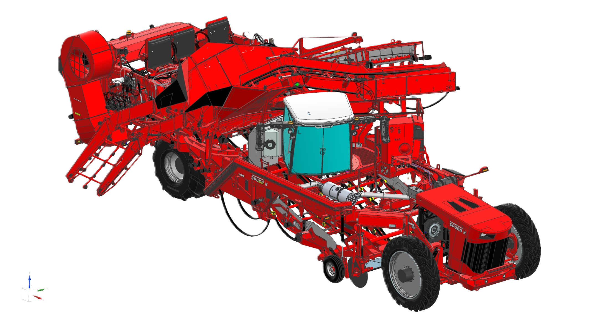

Chains |
||||
|---|---|---|---|---|
| Adjust all: | CHAIN SPEEDS | |||
| Name | Setpoint | Actual Speed | Manual Override | |
| Intake: | FPM | |||
| Primary: | FPM | |||
| Secondary/Vine: | FPM | |||
| Segment Rollers: | FPM | |||
| Clod Rollers: |
|
FPM | ||
| Transfer Rollers: | FPM | |||
| Rear Cross: | FPM | |||
| Side Elev: | FPM | |||
| Fill Elevator: | FPM | |||
| Hopper Chain: |
Hopper: FPM
Boom: FPM |
|||
Primary Shakers |
Secondary Shakers |
Welcome to Settings. Provide units, operator profiles, and calibration options here.
You're on Diagnostics. Display sensor health, error codes, and recent logs.
This is the Help tab. Add quick tips, manuals, and troubleshooting steps.